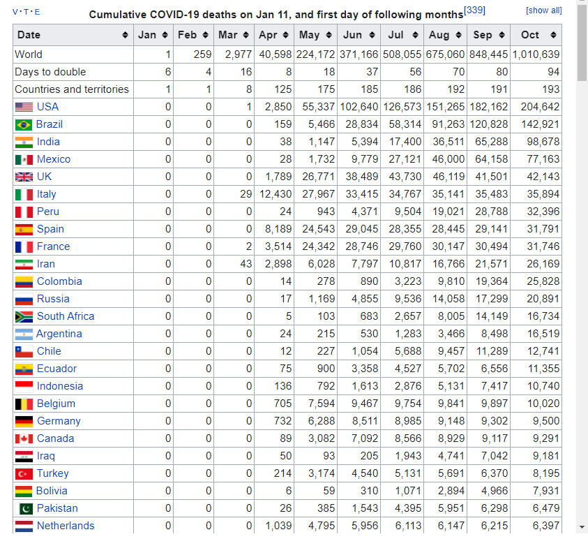
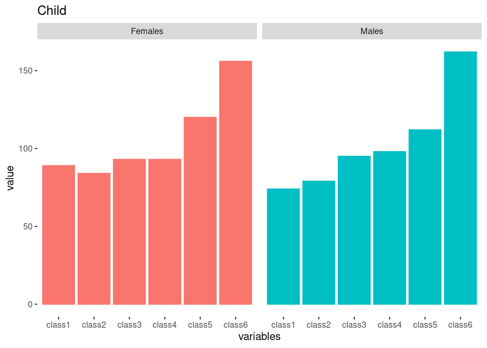
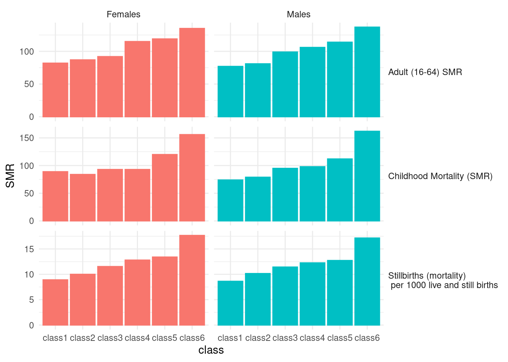

Chapter 14 Web Scraping
Now we can download data and text from web using url load library
library(tidyverse)
library(rvest)
library(DT)14.1 issue of COVID19 in Korea
Now I want to download Table from https://en.wikipedia.org/wiki/COVID-19_pandemic_by_country_and_territory Please visit the website, url.
wiki covid
url <-"https://en.wikipedia.org/wiki/COVID-19_pandemic_by_country_and_territory"read_html() allows us to read url and its’ contents.
h <-read_html(url)
class(h)
h#html_text(h) # just overview of HTML structureGo to website via chrom and click F12 button. You can see the right window as below. Now I want find table of Covid-19 table. I open the search tab by using ctrl + F. And writing or typing india to find that table.
Find source and nodes
Now I try to find table nodes from url
tab <- h %>% html_nodes("table")tab2 <- tab [[2]] %>% html_table## # A tibble: 234 × 6
## `Location[a]...1` `Location[a]...2` `Cases[b]` `Deaths[c]` `Recov.[d]` Ref.
## <chr> <chr> <chr> <chr> <chr> <chr>
## 1 <NA> World[e] 43,895,968 1,165,455 29,727,057 [4]
## 2 <NA> United States[f] 8,879,060 230,176 5,469,963 [13]
## 3 <NA> India 7,946,429 119,502 7,201,070 [14]
## 4 <NA> Brazil 5,440,903 157,981 4,904,046 [15][…
## 5 <NA> Russia[g] 1,547,774 26,589 1,158,940 [17]
## 6 <NA> France[h] 1,198,695 35,541 112,716 [18][…
## 7 <NA> Spain[i] 1,116,738 35,298 No data [20]
## 8 <NA> Argentina[j] 1,116,596 29,730 921,331 [22]
## 9 <NA> Colombia 1,033,218 30,565 932,882 [23]
## 10 <NA> United Kingdom[k] 917,575 45,365 No data [25]
## # … with 224 more rowsI remove ‘,’ and macke numeric variables in Cases, Death and Recover.
tab3 <- tab2[ -c(1, 232, 233, 234), -c(1, 6)] %>%
setNames(c("Location", "Cases",
"Death", "Recover"))
tab3 <- tab3 %>%
mutate_at(c('Cases', 'Death', 'Recover'), function(x)(str_replace_all(x, ",", "") %>% as.numeric())) %>%
mutate(Location = str_replace_all(Location, '\\[[:alpha:]]', ""))I used \\[[:alpha:]], \\[ means “[” and [:aplpah:] means any alphabet, and last ] means ”]”. So, I try to remove the all character within “[ ]”. Now, Table is.
tab3 %>% datatable()figs<-tab3 %>%
mutate(mortality = Death /Cases *1000) %>% # mortality per 1 thousnd cases
ggplot(aes(x = Cases, y = mortality, size = Death))+
geom_point() +
scale_x_continuous(trans = 'log')
figs
14.2 homework
14.2.1 download Cumulative covid19 death
Download data table from url. You can use tab[[ i ]] code to find cumulative covid19 death. The taret Table in web looks like that.
hint
tab4<-tab[[?]] %>% html_table(fill = TRUE)  and the table file is
14.2.2 UK, Italy, France, Spain, USA, Canada
select countris of “UK, Italy, France, Spain, USA, Canada” and plot the trends. and upload the final plot in dspubs.org tutor
Hint |
|
|---|---|
| step1: | create Month_mortatlity data filter countries names of above |
| step2: | chage character data to numeric data |
| step3: | pivot data to long form |
| step4: | plot the graph! |
Step 1 and 2
Month_mortality %>% datatable()step 3
long_death %>% datatable()step 4
## [1] "LC_CTYPE=en_US.UTF-8;LC_NUMERIC=C;LC_TIME=en_US.UTF-8;LC_COLLATE=en_US.UTF-8;LC_MONETARY=en_US.UTF-8;LC_MESSAGES=en_US.UTF-8;LC_PAPER=en_US.UTF-8;LC_NAME=C;LC_ADDRESS=C;LC_TELEPHONE=C;LC_MEASUREMENT=en_US.UTF-8;LC_IDENTIFICATION=C"
14.3 Review of title from google scholar
14.3.1 googl scholar
Search the My name of “Jin-Ha Yoon” in google scholar. The url is https://scholar.google.com/citations?hl=en&user=FzE_ZWAAAAAJ&view_op=list_works&sortby=pubdate
url <- "https://scholar.google.com/citations?hl=en&user=FzE_ZWAAAAAJ&view_op=list_works&sortby=pubdate"step1 read the html using url address
library(rvest)
gs <- read_html(url)step2 filter title using nodes and text, and make data.frame
dat<-gs %>% html_nodes("tbody") %>%
html_nodes("td") %>%
html_nodes("a") %>%
html_text() %>%
data.frame()library(tm)
library(SnowballC)
library(wordcloud)
library(RColorBrewer)
library(dplyr) # for data wrangling
library(tidytext) # for NLP
library(stringr) # to deal with strings
library(knitr) # for tables
library(DT) # for dynamic tables
library(tidyr)step3 split the words (tokenizing) using packages or user own methods.
dat <- dat %>%
setNames(c("titles"))
tokens <-dat %>%
unnest_tokens(word, titles) %>%
count(word, sort = TRUE)%>%
ungroup()
tokens2 <- str_split(dat$titles, " ", simplify = TRUE) %>%
as.data.frame() %>%
mutate(id = row_number()) %>%
pivot_longer(!c(id), names_to = 'Vs', values_to = 'word') %>%
select(-Vs) %>%
filter(!word=="") %>%
count(word, sort = TRUE)%>%
ungroup()step4 import lookup data for removing words
data("stop_words") # we should add user own words.
stop_words %>% datatable()step5 remove stop words and numbers
tokens_clean <- tokens %>%
anti_join(stop_words, by = c("word")) %>%
filter(!str_detect(word, "^[[:digit:]]")) %>%
filter(!str_detect(word, "study|korea"))step6 create word cloud
set.seed(1)
pal <- brewer.pal(12, "Paired")
tokens_clean %>%
with(wordcloud(word, n, random.order = FALSE, colors=pal))
14.4 home work 2
Search you own word in google scholar. for example, You can search “Suicide” or “Hypertension” in google scholar. And, upload your word cloud to google classroom.
14.5 Black Report 2
please visit “https://www.sochealth.co.uk/national-health-service/public-health-and-wellbeing/poverty-and-inequality/the-black-report-1980/the-black-report-2-the-evidence-of-inequalities-in-health/”. That is black report 2, and I need some visualization to present health inequality. Let’s start!.
library(tidyverse)
library(rvest)
library(DT)Get url, save html from url and find tag of “table”. Review the table 5 using html_table(), and datatable().
url <- "https://www.sochealth.co.uk/national-health-service/public-health-and-wellbeing/poverty-and-inequality/the-black-report-1980/the-black-report-2-the-evidence-of-inequalities-in-health/"
h <-read_html(url)
tab <- h %>% html_nodes("table")
tab[[5]] %>% html_table() %>% DT::datatable()The source and gender share same column, hence, I want divided that into two columns. the col names are changed by setNames. The gender variable was reshaped when that have any word of males or female. code of fill fill the missing row as very next values, in other word, fill code make html table to data frame table.
tab[[5]] %>% html_table() %>%
setNames(c('source', paste0('class', 1:6), 'all', 'ratio')) %>%
mutate(gender = case_when(
source == 'Males' ~ 'Males',
str_detect(source, 'Females') ~ 'Females',
TRUE ~ ""
)) %>%
select(source, gender, class1:class6, all, ratio) %>%
mutate(source = case_when(
str_detect(source, 'Males|Females') ~ "",
TRUE ~ source
)) %>%
mutate(source = ifelse(source =="", NA, source)) %>%
fill(source, .direction = "down") %>%
filter(!gender =="") -> tab5
tab5 %>% DT::datatable()Plot the bar plot
tab5 %>%
pivot_longer(-c(source, gender), names_to = 'variables', values_to = 'value') %>%
filter(!variables %in% c('all', 'ratio') ) %>%
mutate(variables = factor(variables,
level = c(paste0('class', 1:6)))) %>%
mutate(value = as.numeric(value)) %>%
mutate(source = str_replace(source, "per", "\n per")) %>%
ggplot(aes(x=variables, y=value, color=gender, fill=gender, group=gender)) +
geom_bar(stat='identity', aes(color = gender, fill=gender)) +
facet_grid(source~gender, scale = 'free') +
theme_minimal() +
theme(panel.grid.major = element_blank(), panel.grid.minor = element_blank(),
panel.background = element_blank(), axis.line = element_blank())+
theme(strip.text.y.right = element_text(angle = 0, hjust = 0),
axis.text.x = element_text(angle = 45, vjust = 0.5, hjust = 1)) +
guides(color = "none", fill = "none") 
tab5.1 <- tab5 %>% filter(str_detect(source, "Stillbirths")) %>% select(-all, -ratio)plot the table 6 using same methods of table 5
tab[[6]] %>% html_table() %>%
tibble() %>%
setNames(c('source', paste0('class', 1:6), 'all', 'ratio')) %>%
filter(source == 'SMR') %>%
mutate(gender = c('Males', 'Females')) %>%
select(-all, -ratio) %>%
pivot_longer(-c(source, gender), names_to = 'variables', values_to = 'value') %>%
mutate(value= as.numeric(value)) %>%
ggplot(aes(x=variables, y = value)) +
geom_bar(stat='identity', aes(fill=gender, color=gender)) +
facet_grid(~gender) +
theme(panel.grid.major = element_blank(), panel.grid.minor = element_blank(),
panel.background = element_blank(), axis.line = element_blank()) +
guides(fill ="none", color ="none") +
ggtitle("Child")
tab[[6]] %>% html_table() %>%
tibble() %>%
setNames(c('source', paste0('class', 1:6), 'all', 'ratio')) %>%
filter(source == 'SMR') %>%
mutate(gender = c('Males', 'Females')) %>%
mutate(source = "Childhood Mortality (SMR)") %>%
select(names(tab5.1)) -> tab6
tab6## # A tibble: 2 × 8
## source gender class1 class2 class3 class4 class5 class6
## <chr> <chr> <chr> <chr> <chr> <chr> <chr> <chr>
## 1 Childhood Mortality (SMR) Males 74 79 95 98 112 162
## 2 Childhood Mortality (SMR) Females 89 84 93 93 120 156Repeat reshaping for Table 7.
tab[[7]] %>% html_table() %>% tibble() %>%
setNames(c('source', paste0('class', 1:6), 'ratio')) %>%
filter(str_detect(source, 'Men|men')) %>%
mutate(gender = source) %>%
mutate(source = "Adult (16-64) SMR") %>%
select(names(tab5.1)) %>%
slice(-3) -> tab7The final graph for black report 2 presentation as below.
rbind(tab5.1, tab6, tab7) %>%
tibble() %>%
mutate(source = str_replace(source, "per", "(mortality) \n per")) %>%
mutate(gender = ifelse(str_detect(gender, 'women'), 'Females',
ifelse(str_detect(gender, 'Men'), 'Males', gender))) %>%
pivot_longer(-c(source, gender), names_to = 'class', values_to = 'SMR') %>%
mutate(SMR = as.numeric(SMR)) %>%
ggplot(aes(x=class, y=SMR)) +
geom_bar(stat='identity', aes(fill=gender, color=gender)) +
facet_grid(source ~gender, scale='free')+
theme(panel.grid.major = element_blank(), panel.grid.minor = element_blank(),
panel.background = element_blank(), axis.line = element_blank()) +
theme_minimal()+
theme(strip.text.y.right = element_text(angle = 0, hjust = 0)) +
guides(fill ="none", color ="none")